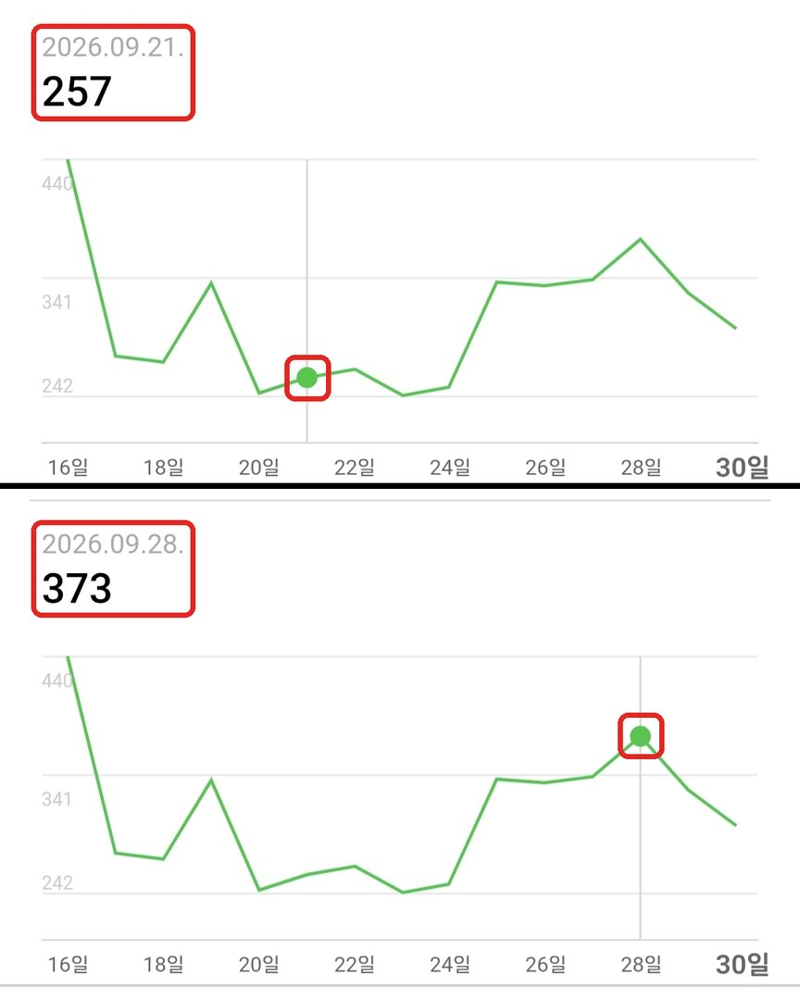
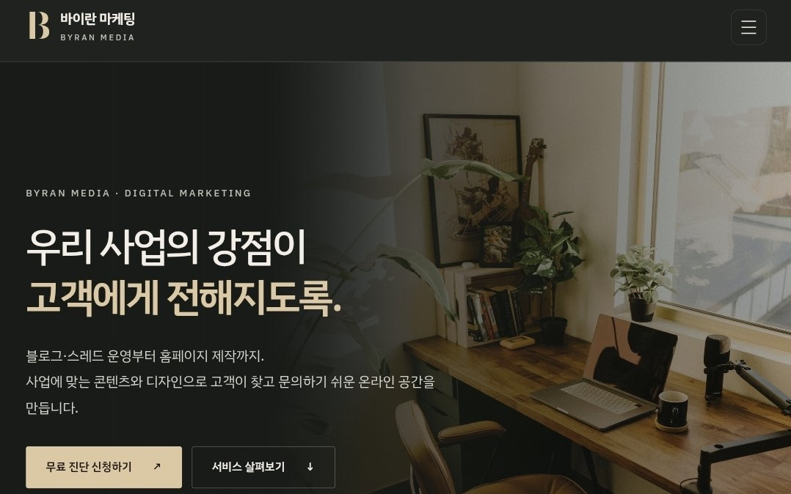
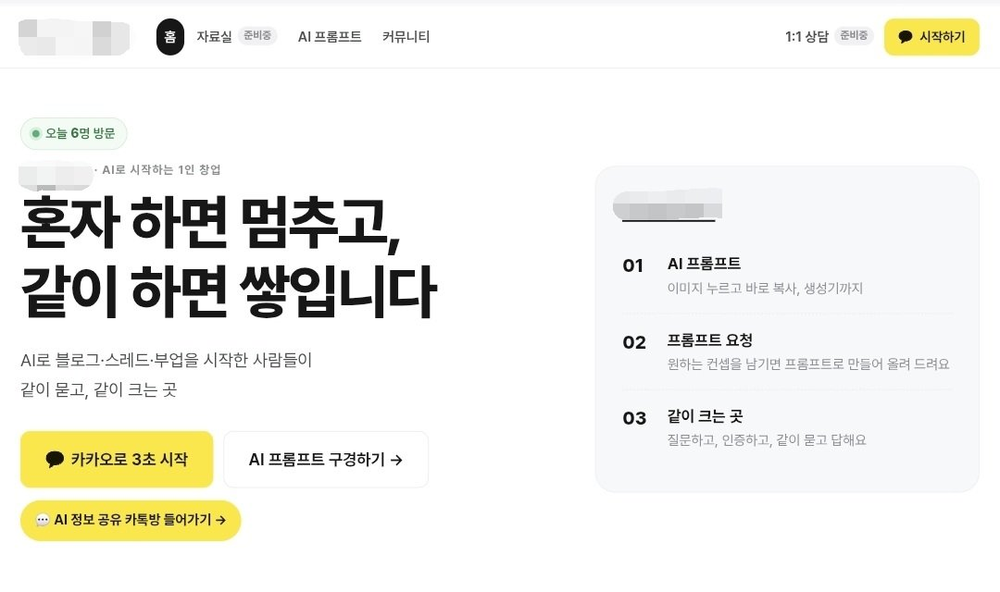
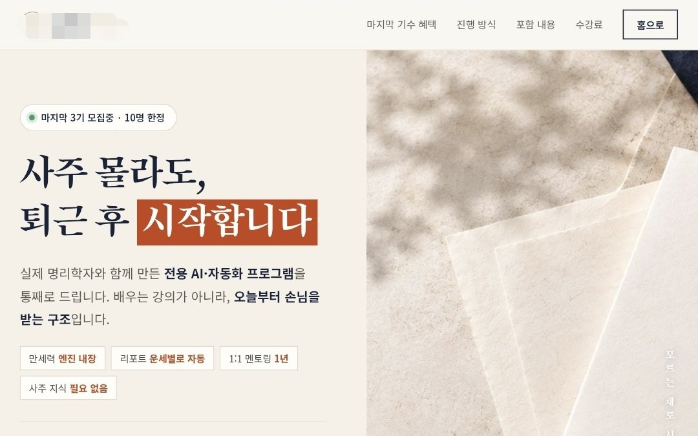
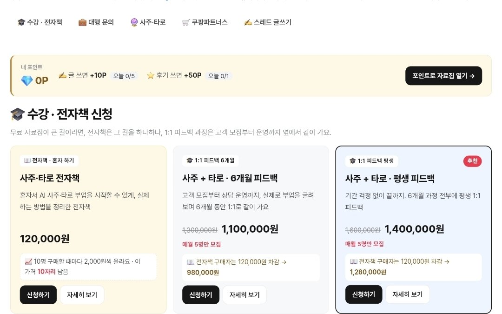

+블로그 · 직접 운영 결과
하루 조회수 250~400대 꾸준히
9월 16일~30일 조회수 · 가장 낮은 날 257회(9월 21일) · 높은 날 370~400대
Portfolio
바이란 마케팅이 운영하고 만든 작업을 서비스별로 모았어요. 사례마다 업종, 톤, 진행 기간을 함께 적어요.
2026년 8월 19일 시작한 블로그가 한 달도 안 돼 만든 결과예요. 직접 운영 중인 네이버 블로그 통계 화면이에요.
직접 운영 중인 스레드 계정의 7일 인사이트(2026년 9월 9일~15일)예요.
샘플로 만든 디자인이에요. 고객 작업 사례는 정리되는 대로 추가돼요.

직접 만들어 운영 중인 사이트와 샘플 디자인이에요.





블로그·스레드·홈페이지 운영 상태를 먼저 무료로 살펴드려요.
문의 내용을 확인한 뒤, 입력하신 연락처로 안내해 드려요. 블로그·스레드·홈페이지 주소를 함께 적어주시면 더 정확하게 살펴볼 수 있어요.